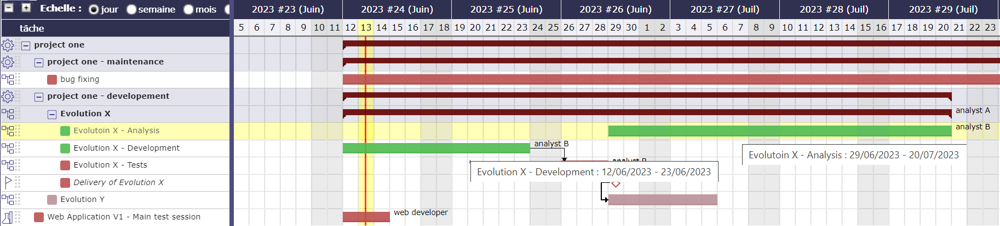
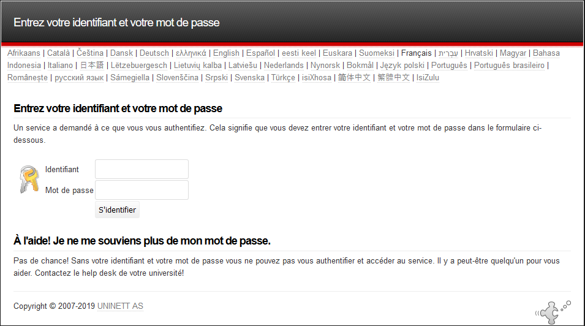

This parameter are taken into account in : working days on calendars,
the working days on the calculation and the display, the working days on the display of real work allocation.
Units for work
Parameters to determine the units used to calculate the actual work
Unit for Timesheet (real work) & Unit for Workload
Parameters to real work allocation and workload.
The fields Unit for real work allocation and for all work data can be in days or hours.
Number of hours per day
Allows to set number of hours per day.
Warning
If both values are different, rounding errors may occur.
Remember that data is always stored in days.
Duration will always be displayed in days, whatever the workload unit.
Timesheet
Defines behavior of tasks in the real work allocation screen.
Display only started tasks
Display only tasks with the Macro status activated.
Set to first ‘in progress’ status
Change the status of the task to the first “in progress” status when actual work is entered.
Set to first ‘done’ status
Change status of the task to the first “done” status when no left work remains.
Max days to book work (warning) :
Number of days that user can enter real work in the future before getting a warning.
Leave blank if you do not want warning.
This parameter does not apply to administrative projects
Max days to book work (blocking)
Number of days that user can enter real work in the future. This limit is blocking.
Leave blank if you do not want blocking.
This parameter does not apply to administrative projects.
Lock timesheet before validated start date
In the planning modes “must start on the validated date” and “does not start before the validated date”, it is possible to block the resource allocation sheets before the validated start dates entered
Alert resource on input done by someone else
Alert the resource when some real work is entered by someone else.
Select your type of alert : Internal, Email, both or none.
Alert when timesheet canceled by other
Send an alert or mail when timesheet is cancelled by another resource.
Select your type of alert : Internal, Email, both or none
Display pools on timesheet
Possibly to display the pool whose the resource belongs to.
You can manage different trigger settings per recipient
Warning
Resources that do not have access to the imputations screen do not receive these alerts
After submit, alert to project leader
After submission what type of alert would you want to send to the project leader
After submit, alert to team manager
After submission what type of alert would you want to send to the team manager
After submit, alert to organism manager
After submission what type of alert would you want to send to the organism manager
if work input to soon, alert to the project leader
If the resource starts filling out actual work on an activity that shouldn’t start on the date of this posting, then the project manager can receive an alert, an email, or both.
Timesheet input format
Week / Month: You can choose between displaying by week or by month directly on the allocation sheet using the dedicated button.
Week: Display will only be done per week.
Month: Display will only be per month Be careful with this display which can cause problems on screens that are too small (<15”)
Specific parameters about Gantt planning presentation.
Do not start before the validated start date
This option allows you to use the validated dates of the project to start it at a later date.
Planning only starts from this date, as if there was a fixed milestone preceding the project.
Resource timesheets on the project will be blocked before the specified date.
priority of activities from end date
If this parameter is Yes, the activities will be prioritized according to the validated end date.

Despite its priority place in the WBS, the Evolution X - Analysis activity is scheduled after the Evolution X - Development activity due to its end date later than the second¶
End date can be inherited from successors or parents
Whether this parameter is Yes or No, the last priority criterion is the order in the WBS.
Prioritization by end date occurs just before this default criterion.
Show resource in Gantt
Select if the resource can be displayed in a Gantt chart, and format for display (name or initials or none).
Apply strict mode for dependencies
Defines if a task can begin the same day as the preceding one.
If yes, the successor should begin the next day
If no, the successor can start the same day.
Manual progress of fixed-duration activities
Choose whether the progress should be calculated or entered manually.
Possibility of managing activities on real time
If yes, you correlate the validated, assigned, actual loads and the rest to be done.
That is, the validated load, the assigned load and the revised (reassessed) load will always be equal.
If so, the addition of an “activity over time” option is added to the activity types.
Warning
This option is not available for activities managed in work units.
Manual planned interventions enter work as
Choose whether the work entered in the manual planning should be saved as real work or planned work.
Limit duration a resource with capacity 0.8 can be planned only one half-day of 0.5d
Determine Duration
Determine duration a resource with capacity 0.8 can be planned on 2 half-days of 0.4d each
None
A resource with capacité 0.8 can be planned on 2 half-days of 0.5d each
max items to display in Gant Planning
You choose the number of rows you display in the Gantt chart.
Milestones
Specific parameters for Milstones management
Auto link the milestone
It optionally allows you to display the element linked to the milestone (The option above should be on “yes” to have access to the selection of milestone targetted)
Set milestone from product version
It optionally allows you to automatically retrieve the milestone from the milestone of the Project Version.
Update milestone responsible from deliverable
Update milestone Responsible automatically when the Responsible of deliverable has changed.
Update milestone responsible from incoming
Update milestone Responsible automatically when the Responsible of deliverable has changed.
Update deliverable responsible from milestone
Update deliverable Responsible automatically when the Responsible of mielstone has changed.
Update incoming responsible from milestone
Update incoming Responsible automatically when the Responsible of milestone has changed.
Allocation & Assignation
Specific parameter for Pool of resource et behavior on activities.
Automatic allocation of pool resources
Automatic allocation of resources of the pool when allocating a pool to a project.
Explicit allocation
When you assign the pool to the project, the resources will appear in the allocation table in addition to the pool row.
And in the drop-down list of resources for assigning to activities.
Implicit allocation
When you assign the pool to the project, only the row of the pool is shown in the allocation table.
The resources composing it are however present in the drop-down list of resources on the table of assignments.
No
None of the resources making up the pool are visible in the assignments table and they will not appear in the drop-down list of assignments.
Status change on assignment
When you assign a resource to a schedulable element of ProjeQtOr, you can modify the status of the element when creating an assignment.
For this behavior to be effective, you must specify which status will trigger this behavior. See: Status
When creating the assignment, the status will be automatically changed unless it was already in the trigger status..
Automation
Parameters to manage automations
Consolidate validated work & cost
Select if validated work & cost are consolidated on top activities and therefore for projects.
Select whether posted work and cost are consolidated across major activities and therefore across projects.
It is therefore the charges and costs of the sub-activities that will be transferred to the “mother” activities and therefore to the projects.
Never: Not consolidated. Charges and costs will only be entered and consolidated manually.
Always: The values are always replaced on the parent activities and the project. If the parent activities were filled in then the values will be overwritten by the child activities.
Only is set: Replaces values only if parents are given. An exception is made if the parent is set to 0 / “null”. In this case, the parent is not overwritten.
Auto set Responsible if single resource:
Behavior about management of responsible, including automatic initialization of responsible.
Automatically set Responsible if not set and by the only one resource allocated to the project
Auto allocated manager to the project:
Automatically create an allocation for the project Manager to the project. He should be a resource.
Auto set responsible if needed:
Automatically set Responsible to current resource (as using the element) if not set and if a Responsible is required (respecting access rights)
Auto assign responsible to activity:
Assign automatically the Responsible to activity
Auto set parent status:
Automatically set the status of the parent element (in the WBS structure) from the status of the child elements.
So that when the first child changes to “in progress”, the parent changes to “in progress” and when all children are done, the parent changes to done.
Graphic interface behavior and generic display parameters.
Name of the instance
Change the window’s name. The name appears at the top center of the window.
Max number of projects on today
Limit the display of the “today list”. items are generally ordered by issue date increasing.
Max items to display in Today lists
Limit the display of items displayed in sections of the Today screen. Items are generally ordered by ascending issue date.
Quick filtering by status
Display one button. Allow to filter on lists the element by status checking boxes. Refresh to make appear on boxe a new state just created on list .
Translation
Choose how the monetary units behave in your area
Currency
Choose your symbol displayed on each monetary box
Currency position for cost display
Symbol sets before or after each monetary box
Default values for user parameters
Default values for user
New interface
Choose between interface v8.6 or the new interface v9.0
Theme colors
The v9.0 interface is composed of two main colors which are declined throughout the application in different hues and saturation to keep the same charter spirit.
Interface main color
Choose the main color that will be applied to the main architectural elements
Interface secondary color
Choose the secondary color that will be applied on the navigation and highlighting elements
Color discs
You have pre-recorded color discs available. One offers the colors of classic ProjeQtOr. Two others are proposals. The fourth will take the colors that you have saved in the global settings for your instances.
They are accelerators to apply your themes.
Default language
Choose among 19 languages / easy come back with translation in target language.
Default theme (only available with version 8.6)
More than 30 themes choices.
First page
Choice of the first visible screen after the connection.
Lock first page
Allows the administrator to select the screen of their choice and block it for users.
They will not see the setting in their connection menu or in user settings > Display
Menu top mode view
You choose how your favorites will be displayed. As text, icons, or both.
Menu left view
The top menu is invisible or not at each connection.
Choose how your principal menu will be display. Text or icons and text.
Tip
Menu v9.0
To show or hide the icons of the new menu, right click on the menu.
Icone size in menu (only available with version 8.6)
Icon size are default : user can overwrite these values.
Display of the upper menu (only available with version 8.6)
The top menu is invisible or not at each connection.
Display of the left menu (only available with version 8.6)
The top menu is invisible or not at each connection.
Create new item on pop-up
You determine if the global creation button will open a pop up or go directly to the screen of the element you want to create.
Display history
No
Yes
Yes with work
On request trhough specific button
To show or hide the icons of the new menu, right click on the menu.
The button will then be displayed in the menu of the details area of each element.
Editor for rich text
Choose your favorite text editor.
Not applicable value
Choice of the symbol defining the non-applicable values.
On the global view the value of the field that has no applicable value for the given column will display this symbol
Restrict project list
When creating an element, name of the project stays like than the one selected at the selector or on contrary offers choice on global list of projects
Export in XLS or ODS
Choose the format in which you want to export either in native excel format or with the ODS format of OpenDocument.
Displaying notes in discussion mode
By default, the notes are displayed in ascending order of creation. To quickly and easily view the replies to certain notes, this option allows you to display the replies under the corresponding notes with an indentation to the right.
Show only notes on Activity Stream
if so, you will not see the status change and item update.
Not receive own emails
You don’t receive the emails you create.
Order notes ascending in email model
Choice of display of notes in the email template.
If YES, you display the notes in ascending order of creation. From the first ID to the last. Some notes containing answers will therefore not necessarily follow the order of display.
If NO, You display the notes as they appear on the screen with the answers under the corresponding notes
In email templates you can call notes in different ways.
With the codes ${NOTES} and ${NOTESTD}
${NOTESTD} allows you to display notes as they are by default.
Default profile for Ldap users, message on creation new user from Ldap,
Actions on LDAP user creation
Project to allocate automatically…
Single Sign On SAML2
Single sign-on is a method that allows a user to access multiple computer applications (or secure websites) by performing a single authentication.

With the single sign on you do not go through the login screen of projeqtor but by a screen dedicated to single sign-on¶
When connected to the SSO service, the service tells each application that the user is logged on.
This avoids having to connect to applications one by one.
In concrete terms, the site or service to which the user is trying to connect makes a request to the server or the identity provider’s site. This one asks if the user is connected. If so, he transmits the information.
Depending on the protocol used, the two sites exchange keys, signatures and / or other information to verify the identity of the user.
You always find the name of the item that is related to your application. A single click takes you to the item page.
The line in the header tells you where your answer should be positioned to allow you to retrieve the response text in your ProjeQtor instance without the original message.
Signing start identifier
When you have completed the IMAP settings for receiving emails, you receive your email with a new header. See the image below.
The fields allows you to identify the beginning of your signature in order to avoid retrieving the signature in the response.
For example, enter, so that ProjeQtOr recognizes that your signature begins with this word. He will not take back everything behind.
Action after processed emails
You can determine what action to perform when receiving the email.
Mark as read, which is the default
Removal
Global parameter for automatic import for replies email¶
Note
IMAP host
Must be an IMAP connection string.
To connect to GMAIL input box, host must be: {imap.gmail.com:993/imap/ssl}INBOX
You must set these parameters if you want to use the Not receive his own mails option in the user settings
Automatic planning calculation
Activated or desactived this feature by simple click
Differential calculation
Project planning is recalculated only for those who need to be. A data or more has been changed into the project so a new calculation is expected.
Complete calculation
All projects planning are recalculated.
Automatic feeding of the real
You automatically fill in the actual work from the scheduled work up to a given date.
The automatic calculation of projects from the day after this date is triggered.
The actual work is automatically entered from the scheduled work until the day before the start of the schedule calculation.
Warning
For security, and to avoid overlapping with a manual input of reality, if the resource has reality for a given date, we do not copy the possible planned existing in reality.
For each scheduled job found, if no job exists for the relevant resource on the date of the scheduled job, copies the scheduled job to an actual job.
We will mark the actual work entered automatically (technical zone type label) to distinguish between automatic feeding and manual feeding.
This area will not be processed for screen renderings, but will analyze any unexpected behavior.
Frequency
Select the frequency on the calendar by clicking on the button defined parameters and choose the schedule, day, month.
will then be displayed in the menu of the details area of each element.